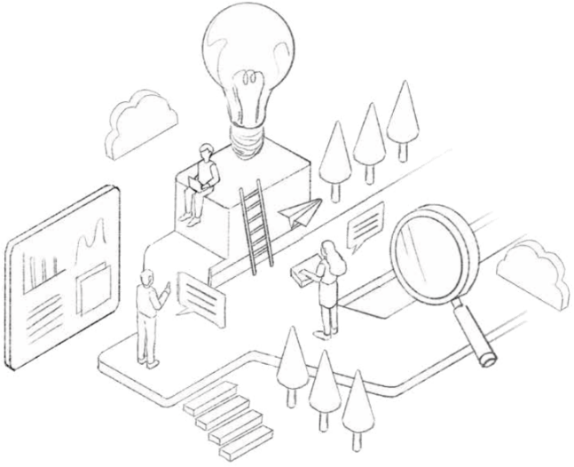
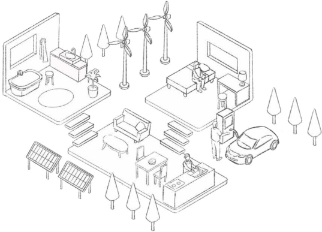
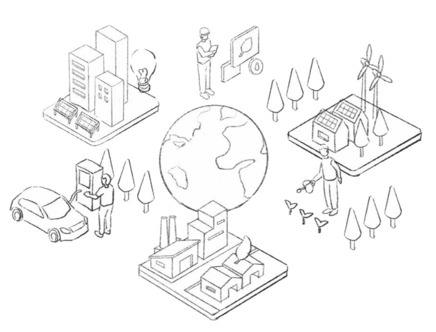

2050年カーボンニュートラルの
実現に向けて


scroll
宣言
わたしたちは、2050年カーボンニュートラルの実現に向けて、
「S＋３E」の同時達成を前提に、
供給側の「電源の脱炭素化」、
需要側の最大限の「電化の推進」に取り組み、
持てる技術、知恵を結集し、積極的に挑戦していきます。
わたしたちの考え
-
 2050年カーボンニュートラルの実現は、
非常にチャレンジングな目標です。
その実現には、多くの課題や不確実性が存在し、
革新技術を創造するイノベーションが不可欠です。 -
 カーボンニュートラルの実現に向けて、
電力業界が担う役割は大きく、
供給側における「電源の脱炭素化」のみならず、
需要側における最大限の「電化の推進」による
脱炭素化の両面からの取り組みが必要です。 -

従来よりエネルギーは、安全性(Safety)の確保を大前提に、
安定供給(Energy Security)
経済性(Economic Efficiency)
環境保全(Environment)の
「S+3E」の同時達成を追求することが最重要であり、
2050年カーボンニュートラルの実現に向けても変わらないものです。 -
 わたしたちは、
2050年カーボンニュートラルの実現に向けて、
「S+3E」の同時達成を前提に、
供給と需要の両面からの取り組み、
革新的技術を生み出すイノベーション等を通じ、
持てる技術と知恵を結集して、
業界全体で積極的に挑戦していきます。
取り組みの方向性


ロードマップ
2050年に向けての実現イメージ
実現に向けてのプラン